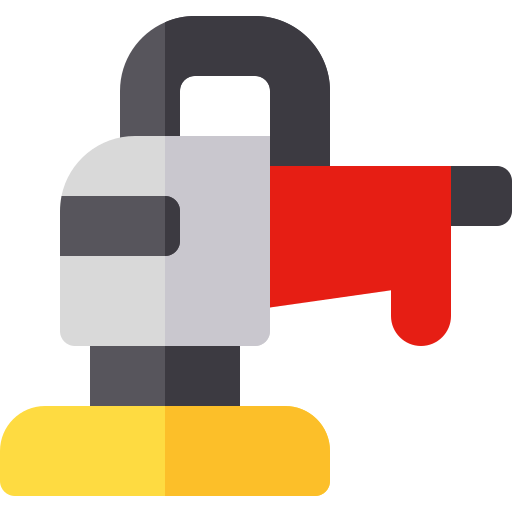
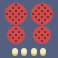
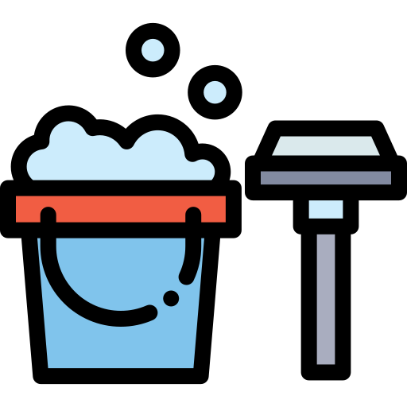
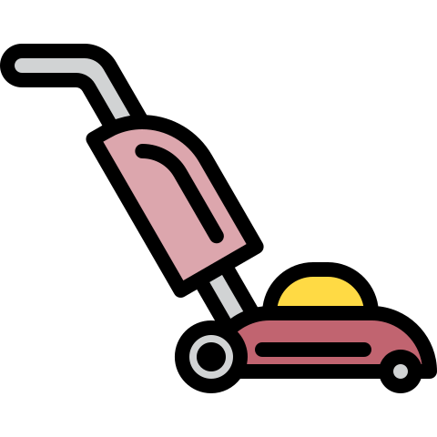
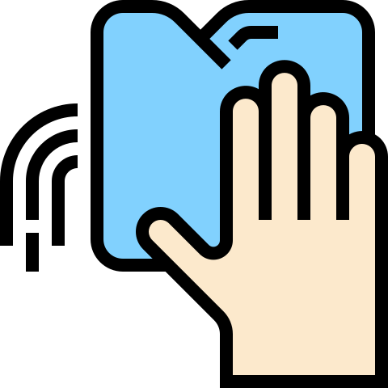
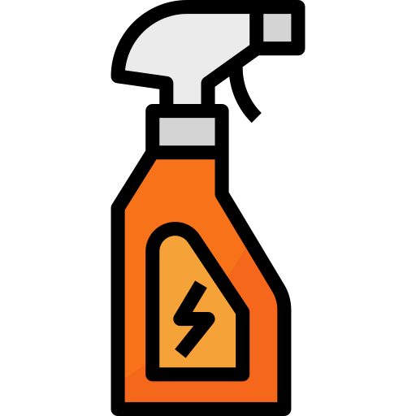

Обработка поверхностей
Обработка поверхностей - размывка (глубокая очистка) полов, полировка мебели, обеспыливание стен, полировка камня, полировка паркета, нанесение защитных составов и т.п. – неотъемлемая составляющая генеральной уборки или уборки после ремонта и строительства в любом помещении. Эти работы могут осуществляться как при оказании клининговых услуг компании «Домовёнок» в Москве, так и проводиться отдельно.
Полировка паркета, ламината
1 м2
80 руб
Очистка межплиточных швов
1 м2
120 руб
Обеспыливание стен и потолков
1 м2(по площади пола)
15 руб
Мытьё стен,потолков

1 м2(по площади пола)
25 руб
Мойка фасадов
1 м2
30 руб
Очистка труднодоступных мест
1 час
500 руб
Размывка полов
1 м2
50 руб
Полировка мебели
1 час
450 руб
Нанесение защитных покрытий
1 м2
80 руб
«DO Cleaning» все нипочём!
Полировка полов
Трудоемкая работа, которая требует использования специальных средств, инвентаря и навыков. Желательно перед полировкой хорошо очистить обрабатываемую поверхность. В таблице ниже указана стоимость на ручную полировку пола. Специальные составы наносятся равномерными слоями и тщательно растираются вручную. Для обработки поверхности также можно использовать роторную машину. В этом случае сначала проводится тщательная размывка пола, затем на поверхность наносится полироль.
Нанесение защитных покрытий
Любая поверхность прослужит дольше и сохранит свой первозданный вид, если за ней правильно ухаживать. Необходимо не только регулярно очищать поверхность от загрязнений, но и защищать её специальными составами и эмульсиями. Мрамор, паркет или паркетная доска, линолеум или мармолеум могут быть покрыты специальными составами, правильно нанесенный состав для защиты добавят блеск Вашим полам, уберут мелкие царапины, увеличат срок службы покрытия, защитят их от проникновения грязи и влаги, а также от мелких механических повреждений (царапин)
Полировка мебели, дверных блоков
Может осуществляться как отдельная работа. В таком случае перед проведением полировки мебели или дверных блоков требуется тщательно помыть и очистить поверхности. Если полировка осуществляется при генеральной уборке или уборке после ремонта, то данный вид работ оплачивается дополнительно.
Чистка плиточных швов
Осуществляется при помощи сильнодействующих растворов и техники. Данная услуга поможет избавиться от грибка и плесени, водного налета и камня. Очень трудоемкая работа, зависит от состояния обрабатываемых швов, оценивается по количеству затраченных часов. Если загрязнения носят сильный характер – возможно частичное разрушение швов.
Обработка поверхностей стен и потолков с целью удаления пыли
Сухая или влажная очистка стен и потолков обычно заказывается при проведении генеральной уборки (если требуется). Услуга поможет придать Вашему помещению совершенно новый и свежий вид. Моющиеся поверхности подвергаются влажной уборке, остальные – сухой.
Чистка труднодоступных мест
Труднодоступными считаются различные углубления, щели, сантехнические узлы, места соединений, стыковочные швы и многое другое, куда невозможно добраться рукой или подручными приспособлениями. Для очистки таких мест мы используем профессиональную технику. Порой с виду чистый кран на кухне или в санузле накапливает в себе много грязи, бактерий и микробов внутри и в местах соединений основных элементов или узлов.
Размывка напольных покрытий
Данные работы осуществляются с помощью роторной машины, водососа, с применением различных средств. Таким образом можно избавиться от загрязнений, которые невозможно удалить в ручную (ржавчина, различные пятна, сильно въевшиеся загрязнения). «Домовёнок» знает, что правильно выбранный химический состав и абразив для размывки и глубокой очистки, способны удалить почти любую грязь. Размывка полов, линолеума, паркета придаст новый вид Вашим полам, которые будут радовать Вас и Ваших посетителей, гостей и друзей!
Чистка бассейнов
Своевременная очистка бассейна увеличивает срок эксплуатации искусственного водоема и гарантирует безопасность здоровья купающихся. В ходе оказания данной услуги наши домовята используют специальные приспособления и инструменты для чистки бассейнов: штанги для донного очистителя, щетки с телескопическими ручками, подводные пылесосы и др.
Подробную консультацию Вы получите по номеру 8 (800) 800-88-88.
Свяжитесь со мной!
Заполните форму заказа и наш менеджер свяжется с Вами в течение 10 минут.